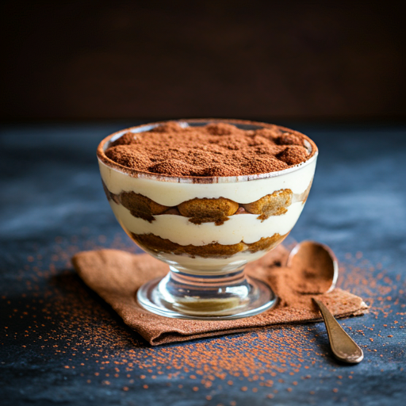

Crème Brûlée
Ingredientes:
- 500ml de creme de leite fresco
- 1 fava de baunilha
- 6 gemas
- 100g de açúcar
- Açúcar para caramelizar
Modo de Preparo:
- Infusione o creme com baunilha
- Misture com as gemas e açúcar
- Asse em banho-maria
- Caramelize o açúcar por cima
Tiramisù

Ingredientes:
- 500g de mascarpone
- Biscoitos tipo ladyfingers
- Café forte
- 4 ovos
- Cacau em pó
Modo de Preparo:
- Prepare o creme de mascarpone
- Molhe os biscoitos no café
- Monte em camadas
- Polvilhe com cacau
Profiteroles
Ingredientes:
- Massa choux
- Creme patissière
- Chocolate meio amargo
- Creme de leite
Modo de Preparo:
- Prepare a massa choux
- Asse as bolinhas
- Recheie com creme
- Cubra com ganache